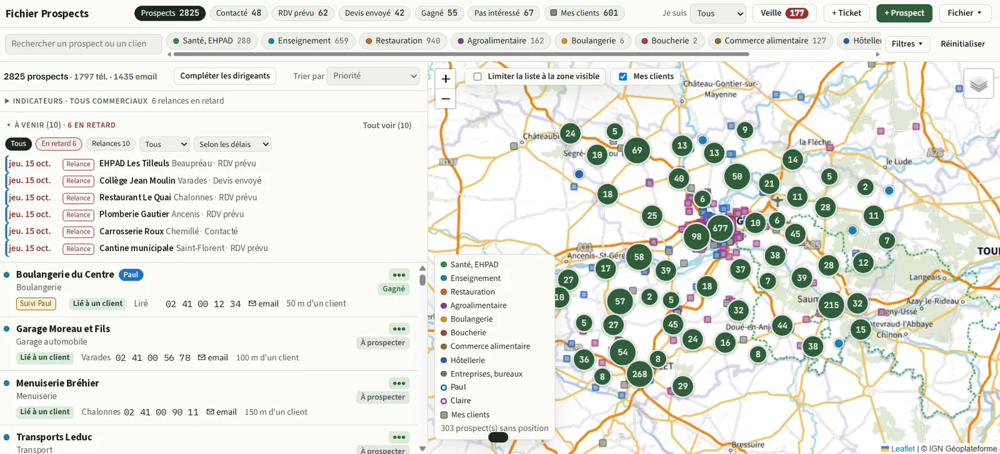

Fichier prospects et relances commerciales, sans rien oublier
Vos prospects sont dans un tableur, les relances dans un agenda, et les comptes rendus dans la tête des commerciaux ? Un fichier prospects sur mesure rassemble tout, avec les relances qui tombent au bon moment.
Ce qui coince aujourd'hui
- Le tableur grossit, se duplique et n'est plus fiable.
- Les relances sont oubliées, ou deux commerciaux appellent le même client.
- Impossible de voir d'un coup d'œil où se trouvent les prospects d'un secteur.
- Quand un commercial part, son suivi part avec lui.
Ce que fait l'outil
- Une fiche par prospect : contacts, secteur, historique des échanges, statut (contacté, rendez-vous, devis, gagné).
- Relances planifiées, avec la liste des retards en haut de l'écran.
- Carte des prospects et des clients pour organiser les tournées par zone.
- Suivi par commercial et indicateurs : taux de transformation, devis en cours.
- Import de vos fichiers existants pour démarrer sans tout ressaisir.
Chaque outil est construit à partir de votre façon de travailler : on garde ce qui marche, on supprime les ressaisies et les étapes inutiles.
Exemple de réalisation

Pour qui ?
PME avec un ou plusieurs commerciaux, artisans qui démarchent des professionnels, entreprises de services B2B.
Basé à Ingrandes (49123), entre Angers et Nantes, je me déplace dans la Vallée de la Loire, les Mauges, le Pays d'Ancenis et le Segréen. Tarifs sur devis, gratuit et détaillé.
Comment ça se passe
On se rencontre chez vous pour voir le process sur le terrain. Vous recevez un devis clair, puis vous testez une première version avec vos vraies données avant la mise en service et la formation de l'équipe. Voir la méthode · Questions fréquentes